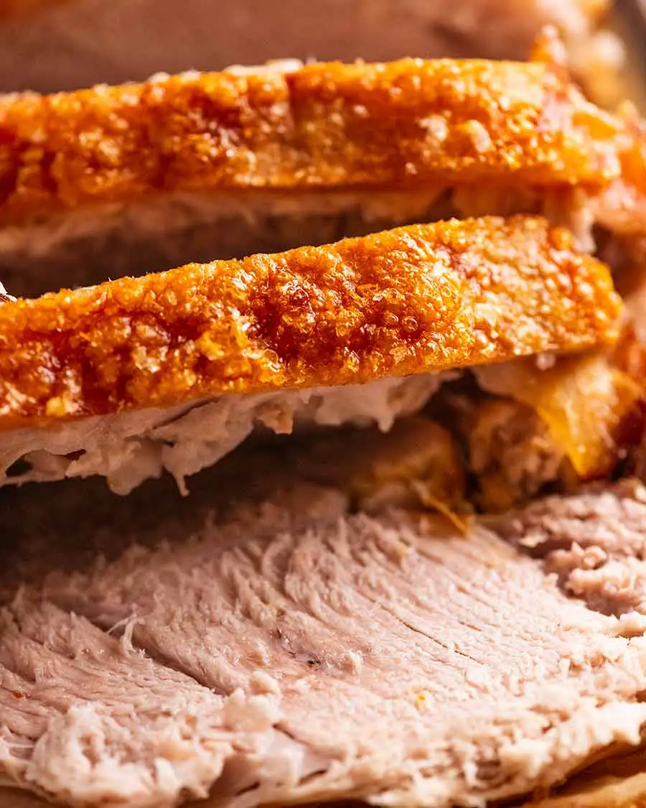

Roast Pork

Description
This perfect Pork Roast features slow-cooked, tender, and flavorful meat infused with juices. The crackling is exceptionally crispy and bubbly throughout, without any rubbery or chewy areas. It's accompanied by a delectable homemade gravy crafted from the pan drippings. This recipe skips the need for blow dryers, boiling water, or overnight air-drying in the fridge. It's straightforward to prepare without requiring any special equipment, and it consistently delivers outstanding results, as attested by the rave reviews.
Ingredients
- 3 kg boneless skin on pork shoulder, NOT scored , unrolled / netting removed
- 3 tsp cooking / kosher salt
- 1 1/4 tsp black pepper
- 2 tsp fennel seeds (or other herb/spice of choice)
- 1 tbsp+ 1 tsp olive oil
- 1 garlic bulb , halved horizontally
- 2 onions , halved (brown, white, red)
- 2 cups dry white wine, or alcoholic or non-alcoholic cider
Gravy
- 1/4 cup flour
- 2 cups chicken broth/stock, low sodium
- Salt and pepper
Steps
- Dry skin: Pat the skin dry with paper towels. If time permits, leave in the fridge uncovered overnight (even 1 hr helps). If not, pat extra well.
- Preheat oven to 220°C (200°C fan).
- Season flesh: Sprinkle pork flesh with 1 1/2 tsp salt, all the pepper and all fennel seeds and 1 tbsp olive oil. Rub into flesh, right into all the crevices and cracks.
- Salt skin: Flip pork, drizzle skin with 1 tsp oil, then rub all over with fingers. Sprinkle all over with remaining 1 1/2 tsp salt, taking care to get even coverage. Un-salted patches will not become bubbly crackling, it will be a hard flat sheet.
- Garlic & onion bed: Place halved garlic bulbs and onion in roasting pan. Place pork skin side up on top of them.
- Wine: Carefully pour wine into the pan, being sure not to wet the skin. Transfer to oven.
- Lower oven: Immediately turn oven down to 160°C (140°C fan).
- Slow roast: Roast for 2 1/2 hours.
- Level at 1 1/2 hours: Check pork after 1 1/2 hours to see if the pork is warped and the skin's overall surface is significantly unlevelled. If so, adjust to make the skin surface as level as possible using balls of foil and moving large dislodged pork pieces to the side (key tip for crispy crackling, Note 3). Then return to oven for the remaining 1 hour.
- Check pan & salt on skin: If pan is drying out, add some water. If there are bald patches on the skin without salt (eg it fell off), spray lightly with oil spray (or brush lightly with oil) then sprinkle with salt. (Remember, salt = bubbly skin!)
- Increase heat: Turn oven up to 250°C (all oven types), or as high as it will go if your oven won't go this high.
- Make skin crisp: Return pork to oven for 30 minutes, rotating pan as needed, until skin is crisp and bubbly all over. If needed, use foil patches, secured with water soaked toothpicks, to cover parts that are done and keep crisping up remaining patches.
- Rest: Transfer pork to serving platter, tent loosely with foil (don't worry, crackling stays super-crisp) and rest for 20 minutes (stays warm up to 1 hour). Then slice using a serrated knife.
- Serve with gravy. Don't pour gravy over crackling – pour it off to the side! See note for reheating.
Gravy:
- Transfer fat to saucepan: Skim off 3 tablespoons of fat from the roasting pan and put in a saucepan.
- Strain pan juices: Place strainer over bowl and scrape in all the remaining pan juices (including onion and garlic). Press out juices, then discard onion & garlic. Skim off excess fat from surface and discard – no need to be exact here!
- Gravy roux: Heat the saucepan with the fat over medium heat. Add flour and cook for 1 minute.
- Add liquids: Pour stock in while whisking so it's lump free. Then pour in strained pan juies.
- Thicken: Simmer until thickened to syrup consistency – about 3 minutes – it will thicken more as it cools a little while serving.
- Season: Adjust salt and pepper to taste. Pour into serving jug. Serve with pork.